Capítulo 8 Derivadas e integrales
Podemos decir que el cálculo nació cuando nacieron los conceptos de derivada y de integral, en el S. XVII. Nacieron al mismo tiempo, y desarrollado por los mismos matemáticos: Fermat, Leibniz, Newton, los hermanos Bernoulli, Euler… Hoy los vemos como dos partes de un todo, dos operaciones inversas. Pero la derivada y la integral nacieron para resolver dos problemas muy diferentes y fue después, y supongo que con mucha sorpresa, que se descubrió su relación.
Antes de entrar, en detalle y por separado, en cada una de estas dos operaciones, vamos a ver su interpretación geométrica y física, y mostrar la relacion que tienen.
8.1 Interpretación geométrica de la derivada: tangentes
Una tangente a una curva es una recta que toca a la curva en un solo punto, pero no la atraviesa. La idea de tangente es tan antigua como la geometría y ya la desarrollaron los matemáticos griegos. Pero en el S. XVI Descartes convirtió a la geometría en un problema algebraico y numérico, mostrando cómo se puede describir una curva con una ecuación. Encontrar una tangente a una curva dejaba de ser un problema de dibujo y se convertía en un problema algebraico: ¿cuál es la ecuación de la recta que es tangente a una determinada curva en un punto?
El concepto de límite nos permite plantear este problema de forma adecuada. Sea una curva cualquiera y cogemos un punto \(A\) sobre la curva, de coordenadas \((A_x, A_y)\) y otro punto \(B\), también sobre la curva, pero que está a una distancia de 1 sobre el eje X. Es decir, las coordenadas de \(B\) son \((A_x + 1, B_y)\). Trazamos la recta que pasa por esos dos puntos:
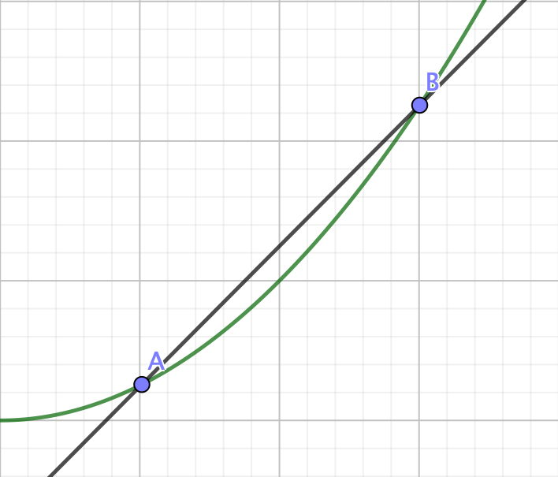
Describir algebraicamente esa recta es fácil: es la recta que pasa por el punto \(A\) y cuya pendiente es \(m = (B_y - A_y)/(A_x + 1 - A_x) = (B_y - A_y)/1\).
Seguimos con \(A\) y cogemos ahora un punto \(C\) que está más cerca de \(A\), a una distancia de 0,5 sobre el eje X: \(C = (A_x + 0.5, C_y)\) y trazamos la recta que pasa por estos dos puntos. La ecuación de la recta es la de aquella que pasa por el punto \(A\) y cuya pendiente es \(m = (C_y - A_y)/0.5\).
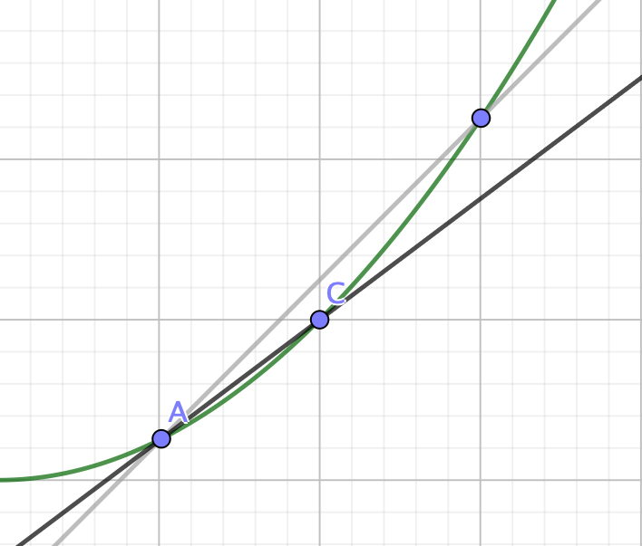
Y repetimos con un punto \(D\) que ahora está a distancia 0.25 de \(A\) sobre el eje X. La recta que pasa por estos dos puntos es aquella que pasa por \(A\) y tiene pendiente \(m = (D_y - A_y)/0.25\).
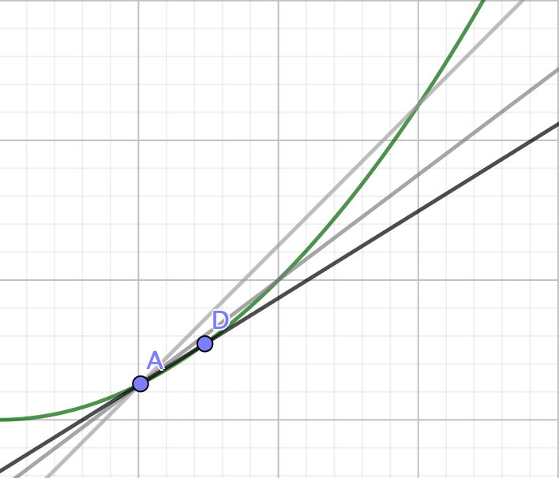
Podemos repetir este proceso tantas veces como queramos, siempre y cuando no lleguemos a \(A\). Si llegamos a \(A\) no tenemos la recta que pasa por 2 puntos, sino la que pasa por 1 punto, y ahí nos perdemos. Pero mientras nos vayamos acercando, por pequeña que sea la distancia entre \(A\) y el punto, mientras no sea 0, podemos calcular la pendiente de la recta. Pues definimos como pendiente de la recta tangente a la curva en \(A\) como el límite de las pendientes de las rectas que hemos trazado.
El problema se parece al de las discontinuidades evitables que vimos en el apartado 7.2. La función no existe en un punto, pero sí existe el límite cundo nos acercamos al punto. Aquí pasa lo mismo: este método no nos da la pendiente en el punto \(A\), pero sí que podemos calcular el límite cuando nos acercamos al punto \(A\).
A esta pendiente que hemos encontrado de esta forma, la llamamos la derivada de la función en el punto \(A\).
Esta es la interpretación geométrica de la derivada.
8.2 Interpretación física de la derivada: velocidad
Tenemos un coche desplazándose en linea recta. Y tenemos en el coche un GPS ideal que nos da en todo momento la posición del coche con precisión absoluta tanto de la posición como del tiempo. Queremos saber cuál es la velocidad del coche en un instante dado. Vamos a utilizar la letra \(s\) para las posiciones y la letra \(t\) para los tiempos. Para no ir arrastrando \(s_0\) y \(t_0\) por todo el texto, ponemos el origen de espacio y tiempo en el punto que nos interesa y en el instante que nos interesa: es decir, \(s_0 = 0\) y \(t_0 = 0\).
Si preguntamos al GPS dónde estaba el coche en el instante \(t = 0\) nos responderá que en \(s = 0\). Si le preguntamos cuánto se ha movido en ese instante exacto, nos dirá que nada. Es lógico: en 0 segundos se ha movido 0 metros. Pero eso no quiere decir que el coche estaba quieto: sabemos que se movía. A estas alturas ya sabemos qué tenemos que hacer. Preguntamos al GPS dónde estaba el coche en el instante \(t = 1\mbox{ s}\) y nos dice que en \(s = s_1\mbox{ m}\). Luego la velocidad media en ese segundo era de \(\frac{s_1}{1}\mbox{ m/s}\). Ahora preguntamos al GPS dónde estaba el coche en el instante \(t = 0.5\mbox{ s}\) y nos dice que en \(s = s_{0.5}\mbox{ m}\). Luego la velocidad media en ese medio segundo era de \(\frac{s_{0.5}}{0.5}\mbox{ m/s}\). Y ahora le preguntamos al GPS donde estaba en el instante \(t = 0.25\mbox{ s}\), y en el instante \(t = 0.125\mbox{ s}\), etc. y podemos ir calculando las velocidades medias de intervalos de tiempo cada vez más pequeños. Esas velocidades van a tener un límite, luego ahora definimos la velocidad en el instante \(t = 0\) como el límite de esas velocidades medias a medida que \(t\) tiende a 0. Definimos la velocidad como la derivada de la posición respecto del tiempo.
Hemos cogido un caso concreto, posición y velocidad de un objeto. Pero cada vez que en física aparece una derivada, podemos hacer una interpretación análoga. Si por ejemplo estamos considerando la evaporación de agua en un estanque y queremos saber cuánto se evapora en un instante, medimos cuánto se evapora de media en 1 segundo, 0.5 segundos, etc. y podemos tener la evaporación instantánea.
8.3 Equivalencia de las dos interpretaciones
Hemos dado dos definiciones de derivada. Supongo que no sorprenderá a nadie saber que ambas definiciones son equivalentes (si no lo fueran, tendríamos un problema grave). Veámoslo.
Vamos a convertir la interpretación física a la geométrica. Para ello dibujamos la curva del espacio en función del tiempo, es decir, \(s(t)\). Para calcular la velocidad media en 1 segundo, cogimos \(s(1)\), que llamamos \(s_1\) y \(s(0)\), que era 0, y calculamos \((s(1) - s(0))/1\). Pero eso es precisamente la expresión de la pendiente de la recta que pasa por esos dos puntos. Es decir, lo mismo que hicimos en la interpretación geométrica. Y el coger intervalos de tiempo cada vez más cortos, es coger puntos cada vez más cercanos al punto de partida. Que es lo mismo que hicimos con la interpretación geométrica. Y llegamos a la concusión que la velocidad en el instante \(t = 0\) la podemos interpretar como la pendiente de la tangente a la curva de posición en el punto \((s_0, t_0)\). Las dos interpretaciones son equivalentes.
8.4 Definición de derivada
Después de considerar estas dos interpretaciones, vamos a dar una definición matemática de lo que es una derivada. Nos basaremos en la interpretación geométrica. Tenemos una función \(f(x)\) que es continua en un intervalo \([u, v]\). Dibujamos la gráfica de la función y tenemos una curva. Cogemos un punto \(A\) de esta curva, cuyas coordenadas son \((a, f(a))\). Vamos a dar un “empujoncito” de tamaño 1 al punto \(x = a\) y veamos qué hace la función. Cogemos, pues, un punto \(B\) sobre al curva, que está a una distancia de 1 sobre el eje X. Las coordenadas de \(B\) son \((a + 1, f(b)) = (a+1, f(a+1))\). Podemos saber cómo varía la función tras este empujoncito mirando la pendiente de la recta que pasa por los dos puntos: \[m_1 = \frac{f(a+1) - f(a)}{(a+1) - a} = \frac{f(a+1) - f(a)}{1}.\]
Vamos a dar un empujoncito más pequeño, de tamaño 0.5. Esto nos da un punto \(C\), sobre la curva, que está a distancia 0.5 de \(A\) sobre el eje X. Podemos saber cómo varía la función tras este empujoncito mirando la pendiente de la recta que pasa por los dos puntos: \[m_{0.5} = \frac{f(a+0.5) - f(a)}{(a+0.5) - a} = \frac{f(a+0.5) - f(a)}{0.5}.\]
En general, damos un empujoncito pequeño de tamaño \(dx\) y miramos cómo varía la función calculando la pendiente que pasa por los dos puntos. Es facil calcular que es \[m = \frac{f(a+dx) - f(a)}{dx}.\]
La pendiente de la tangente en \(A\), es decir, la derivada de la función \(f(x)\) en \(x = a\), es el límite cuando los puntos tienden a \(A\), o lo que es lo mismo, el límite cuando el empujoncito \(dx\) tiende a 0:
\[\frac{df}{dx}(a) = f^{\prime}(a) = \lim_{dx \to 0}\frac{f(a+dx) - f(a)}{dx}\]
Por lo tanto vemos que la derivada nos dice cómo varía la función \(f(x)\) cuando le damos un “empujoncito” cada vez más pequeño, que tiende a 0, a la variable \(x\).
A veces a \(dx\) se le llama un infinitesimal o una cantidad infinítamente pequeña. Ese es un error que a veces causa confución. Es mejor pensar en \(dx\) como una cantidad pequeña, pero existente, pero entendiendo que lo que nos interesa es lo que pasa cuando \(dx\) tiende a 0.
Hemos definido la derivada para un punto concreto de la curva \(A = (a, f(a))\). Podemos definir ahora la derivada en un intervalo abierto \((u, v)\). Sea \(x\) en \((u, v)\), su derivada es \[\frac{df}{dx}(x) = f^{\prime}(x) = \lim_{dx \to 0}\frac{f(x+dx) - f(x)}{dx}\]
Vemos también que hay dos notaciones, \(\frac{df}{dx} (x)\) y \(f^{\prime}(x)\). Hay quien defiende la primera, llamada notación de Leibniz, y hay quien defiende la segunda. Hay que conocerlas ambas. Aquí usaremos las dos, según convenga.
Lo hemos definido en un intervalo abierto \((u, v)\), puesto que tenemos problemas para definir las derivadas en los extremos \(u\) y \(v\) del intervalo, pues no podemos decir nada de loq ue pasa fuera del intervalo (ni siquiera sabemos si la función está definida). Es el mismo problema con el que nos encontramos al definir continuidad en un intervalo. Y se resuelve de la mima manera.
8.4.1 Derivadas laterales
Como existen límites laterales, y la derivada se define a partir del límite, es una extensión natural definir derivadas laterales: definimos derivada por la derecha de una función \(f(x)\) en un punto \(a\) como
\[f^{\prime}(a^+) = \lim_{dx \to 0^+}\frac{f(a+dx) - f(a)}{dx}\]
y derivada por la izquierda: \[f^{\prime}(a^-) = \lim_{dx \to 0^-}\frac{f(a+dx) - f(a)}{dx}\]
Como en el caso de los límites, para que exista derivada en \(x = a\), si existen, ambas derivadas laterales deben iguales: \(f^{\prime}(a^+) = f^{\prime}(a^-) = f^{\prime}(a)\). Si no son iguales, entonces no hay derivada en \(x = a\).
8.4.2 Existencia de derivadas
Hemos definido las derivada a partir del concepto de límite. Sabemos que un límite puedo o no existir. Por lo tanto la derivada en un punto también puede o no existir. Si en un punto \(a\) el límite, y por lo tanto la derivada, existe, decimos que la función \(f(x)\) es derivable en el punto \(a\). Si no existe, entonces decimos que la función \(f(x)\) no es derivable en el punto \(a\).
Y ahora podemos extender la idea de derivable en un punto a derivable en un intervalo: decimos que una función es derivable en un intervalo \((u, v)\), si es derivable en todos los puntos del intervalo. Y una vez definidas las derivadas laterales, podemos definir derivada de una función en un intervalo cerrado: Una función es derivable en un intervalo cerrado \([u, v]\) si es derivable en el intervalo abierto \((u, v)\) y tiene derivada por la derecha en \(u\) y derivada por la izquierda en \(v\).
Esto quiere decir que en el punto \(x = 0\) la derivada por la izquierda es \(f^{\prime}(0^-) = -1\) y la derivada por la derecha es \(f^{\prime}(0^+) = 1\). Como las derivadas laterales son distintas, \(f(x) = |x|\) no es derivable en \(x = 0\).
Una vez vistas las derivadas, pasemos a las integrales.
8.5 Interpretación geométrica de la integral: área bajo una curva
Tenemos una cierta curva y queremos calcular el área entre la curva y el eje X entre \(x = 0\) y \(x = 2\).
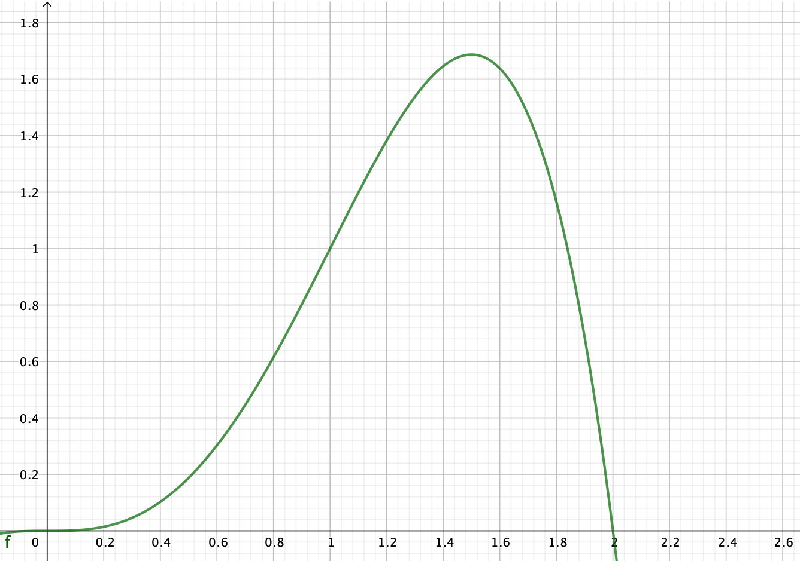
No sabemos hacerlo de forma exacta, pero lo que podemos hacer es crear rectángulos. Sabemos calcular el área de un rectángulo y podemos entonces sumar estas áreas para tener un valor aproximado del área. Llamemos \(dx\) a la longitud de la base del rectángulo. Si hacemos rectángulos de base \(dx = 0.2\) tenemos:
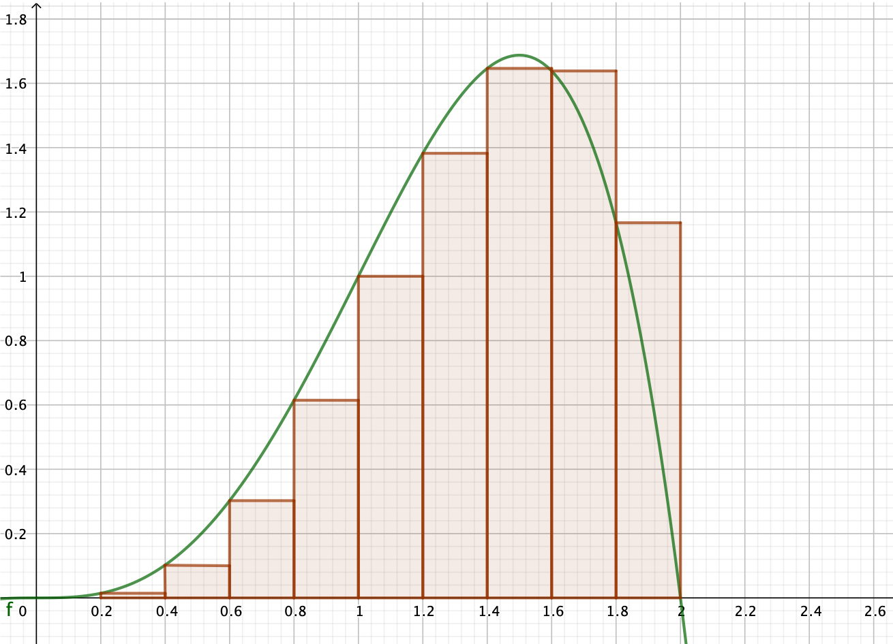
Parece una aproximación un poco cruda. Podemos crear rectángulos más estrechos y la aproximación será mejor. Por ejemplo con rectángulos de base \(dx = 0.1\) nos queda:
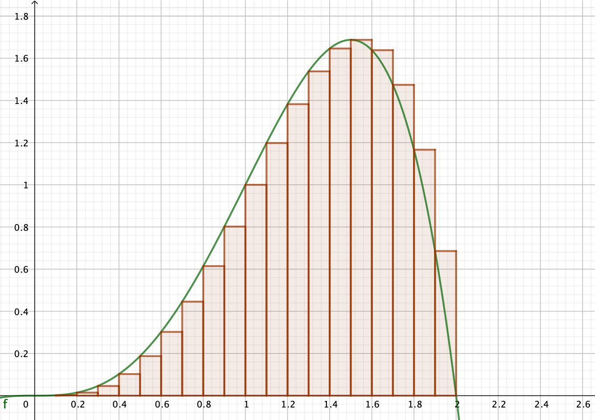
Intuitivamente entendemos que cuanto más estrechos sean los rectángulos, mejor aproximará la suma de rectángulos al área bajo la curva. El área bajo la curva será el límite de la suma de los rectángulos cuando la base \(dx\) tienda a cero. A esto se le llama la integral de esta curva entre 0 y 2.
El símbolo de la integral, \(\int\), lo diseñó Leibniz. Es una “S” estilizada. S de suma. La palabra “integral” nos debe evocar la idea de suma.
8.6 Interpretación física de la integral: espacio recorrido por un coche
Para la interpretación física, volvamos a nuestro coche del apartado 8.2. La diferencia es que ahora, en vez de un GPS que nos da la posición, tenemos un velocímetro ideal, que nos da la velocidad del coche con absoluta precisión, tanto de la velocidad como del tiempo. Así, sabemos la velocidad en cada momento, pero no sabemos cuánto ha recorrido el coche, y queremos calcularlo a partir de los datos de este velocímetro. Otra vez, para no ir arrastrando \(s_0\) y \(t_0\), suponemos que en el instante \(t = 0\) estamos en el origen, es decir, \(s(0) = 0\).
Vamos a preguntar a nuestro velocímetro la velocidad a la que íbamos a cada intervalo que vamos a llamar \(dt\) segundos. Empezamos preguntando a cada segundo, es decir, \(dt = 1\). Preguntamos cuál era la velocidad en el tiempo \(t = 0\) y nos responde que era \(v_0\mbox{ m/s}\). Vamos a suponer que la velocidad era constante en ese primer segundo. Esto quiere decir que en el primer segundo hemos avanzado \(v_0\cdot 1 = v_0\mbox{ m}\). Ahora preguntamos al velocímetro cuál era la velocidad en el tiempo \(t = 1\). Nos responde que era \(v_1\mbox{ m/s}\). Suponemos, otra vez, que la velocidad era constante en ese segundo y calculamos que hemos avanzado \(v_1\cdot 1 = v_1\mbox{ m}\) en ese segundo, y que en el total de los 2 segundos hemos avanzado \(v_0 + v_1\mbox{ m}\). Seguimos preguntando a cada segundo y, por ejemplo al cabo de 20 segundos estimamos que hemos avanzado \(v_0 + v_1 + \cdots +v_{19}\mbox{ m}\).
Si queremos mejorar nuestra estima, podemos reducir \(dt\) y preguntar cada menos tiempo, por ejemplo cada \(dt = 0.5\) segundos. En \(t=0\) la velocidad es \(v_0\) y en el primer medio segundo hemos avanzado \(v_0\cdot 0.5 = 0.5 v_0\mbox{ m}\). En \(t = 0.5\) la velocidad es \(v_{0.5}\) y calculamos que hemos avanzado \(0.5 v_0 + 0.5 v_0.5 = 0.5(v_0 + v_{0.5})\mbox{ m}\). Y al cabo de 20 segundos nuestra estima es \(0.5 (v_0 + v_{0.5} + v_1 + \cdots + v_{19} +v_{19.5})\mbox{ m}\). Otra vez vemos intuitivamente que cuanto más a menudo preguntemos la velocidad, mejor estimaremos lo que hemos avanzado. Y la posicion exacta será el límite cuando \(dt\) tienda a 0. Hemos encontrado la posición como la integral de la velocidad.
Este método que hemos descrito se ha usado durante siglos en la navegación de barcos. Cada cierto tiempo se medía la velocidad del barco y se suponía que el barco avanzaba a velocidad constante hasta la siguiente medida. Para medir la velocidad tiraban una cuerda al agua con un flotador en un extremo. En la cuerda había nudos a intervalos regulares y contaban cuantos nudos caían al agua en un cierto tiempo. Por eso la unidad de velocidad de los barcos se llama nudos.
8.7 Equivalencia de las dos interpretaciones
Como en el caso de la derivada, vamos a convertir la interpretación física a la geométrica. Consideremos la función \(v(t)\), con la velocidad del coche en cada instante \(t\). En el caso en el que hicimos \(dt = 0.5\) segundos, cogíamos los instantes \(t = 0, t = 0.5, t = 1, \dots\) y al considerar que la velocidad era constante, multiplicábamos \(v(t) \cdot dt\) para estimar cuánto se había desplazado en ese intervalo. Por ejemplo para el intervalo entre \(t = 1\) y \(t = 1.5\) obteníamos \(0.5 v(1)\). Y después sumábamos todo. Pero esa expresión \(0.5 v(1)\) es precisamente el área de un rectángulo de altura \(v(1)\) y anchura \(dt = 0.5\), que es precisamente lo que hacemos en la interpretación geométrica. Y sumar todos los desplazamientos es, por lo tanto, sumar todos los rectángulos. Luego ambas interpretaciones dan lugar a la misma expresión y son equivalentes.
8.8 Definición de integral
La integral es inherentemente más difícil que la derivada y así como pudimos dar una definicion rigurosa de la derivada a partir de las ideas básicas, no es posible hacerlo con la integral. La definción que vamos a dar aquí de la integral no es rigurosa y tiene muchos agujeros, pero nos servirá para concretar las ideas intuitivas que hemos visto.
Sea una función \(f(x)\) continua en el intervalo \([a, b]\). Dividimos este intervalo en \(N\) subintervalos iguales. La longitud de cada subintervalo es \(dx = (b-a)/N\). Cogemos los puntos de inicio de cada subintervalo: \(a, a +dx, a+2dx, \dots, a + (N-1)dx\). Creamos \(N\) rectángulos cuya base es cada uno de los subintervalos y cuya altura es la altura de la función al inicio del subintervalo. Las áreas de estos rectángulos son \(dx\cdot f(a), dx\cdot f(a+dx), dx\cdot f(a+2dx), \dots\) y la suma \(A_N\) de estas áreas es \[\begin{align} A_N &= dx\cdot f(a) + dx\cdot f(a+dx)+ dx\cdot f(a+2dx)+ \cdots\\ &= dx(f(a) + f(a+dx) + f(a+2dx)+ \cdots)\\ &= dx\sum_{k = 1}^N f(a+(k-1)dx) \end{align}\] Definimos (de forma no rigurosa) como integral de \(f(x)\) entre \(a\) y \(b\) al límite de la sucesión de estos valores \(A_N\) cuando \(N\) tiende a infinito:
\[\int_a^b f(x)dx = \lim_{N\to \infty} A_N = \lim_{N\to \infty}dx\sum_{k = 1}^N f(a+(k-1)dx)\]
Nótese que cuando \(N\) tiende a infinito, \(dx\) tiende a 0 y podríamos igualmente haber definido la integral como el límite cuando \(dx\) tiende a 0 de esa expresión.
Nótese también que tenemos un \(dx\) multiplicando el sumatorio. Es por eso que la expresión correcta es \(\int_a^b f(x)dx\) y no \(\int_a^b f(x)\). Olvidarse del \(dx\) es un error grave.
Y una tercera nota. Hemos cogido el valor de \(f(x)\) al inicio de cada intervalo. Igual podíamos haber cogido el valor de \(f(x)\) al final de cada intervalo (o en el punto medio de cada intervalo, o en…). Aunque los valores de las sumas parciales van a ser diferentes, en el límite van a llegar al mismo valor.
8.8.1 Integrales negativas
Si miramos la expresión que acabamos de escribir en el apartado anterior, vemos que es perfectamente posible tener integrales negativas: el signo depende de la suma de los valores de \(f(a+(k-1)dx)\) y, como \(f(x)\) puede ser negativa, la suma, y por lo tanto la integral, también pueden serlo.
Pero la idea de un área negativa nos chirría: un área siempre es positiva. ¿no es esto un sinsentido? Vamos a ver que, mirando la interpretación física de la integral, el hablar de integrales negativas tiene todo el sentido del mundo.
Seguimos con nuestro ejemplo del coche. En mecánica, la disciplina de la física que se ocupa del movimiento de los objetos, se da un signo a los desplazamientos. La costumbre es que un signo positivo significa que estamos a la derecha del origen y un signo negativo indica que estamos a la izquierda del origen. Por lo tanto \(s = 1.2\) quiere decir que estamos 1.2 metros a la derecha del punto que hemos establecido como origen y \(s = -0.78\) quiere decir que estamos a 0.78 metros a la izquierda de este punto.
Y lo mismo pasa con las velocidades: uan velocidad positiva quiere decir que nos estamos desplazando hacia la derecha del origen y una velocidad negativa quiere decir que nos estamos desplazando hacia la izquierda del origen.
Consideremos ahora que la velocidad de nuestro coche es la función \(5\sin ((\pi/10)t)\):
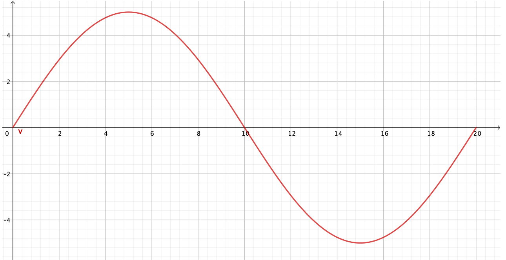
Vemos que el coche avanza hacia la derecha (velocidades positivas) hasta \(t = 10\), y después avanza hacia la izquierda (retrocede) hasta \(t = 20\), donde se para. Y lo que queremos saber es dónde se para.
Recordemos que la superficie bajo la curva nos da el desplazamiento. Vamos a considerar sólo la superficie (es decir, el desplazamiento) entre \(0\) y un valor \(t < 10\). Por ejemplo, si tenemos \(t = 6\) el área es
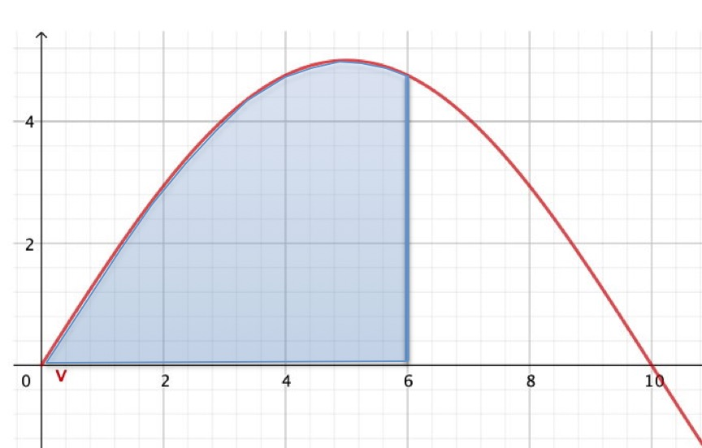
Es fácil ver que a medida que \(t\) crece el area es mayor y por lo tanto el coche está más alejado hacia la derecha del origen. El máximo se obtiene cuando \(t = 10\). Esto coincide con nuestro conocimiento de lo que hace el coche: hasta \(t = 10\) no para de avanzar. ¿Que pasa a partir de \(t = 10\)?
Vamos a mirar la posición, es decir el área bajo la curva en \(t = 12.8\):
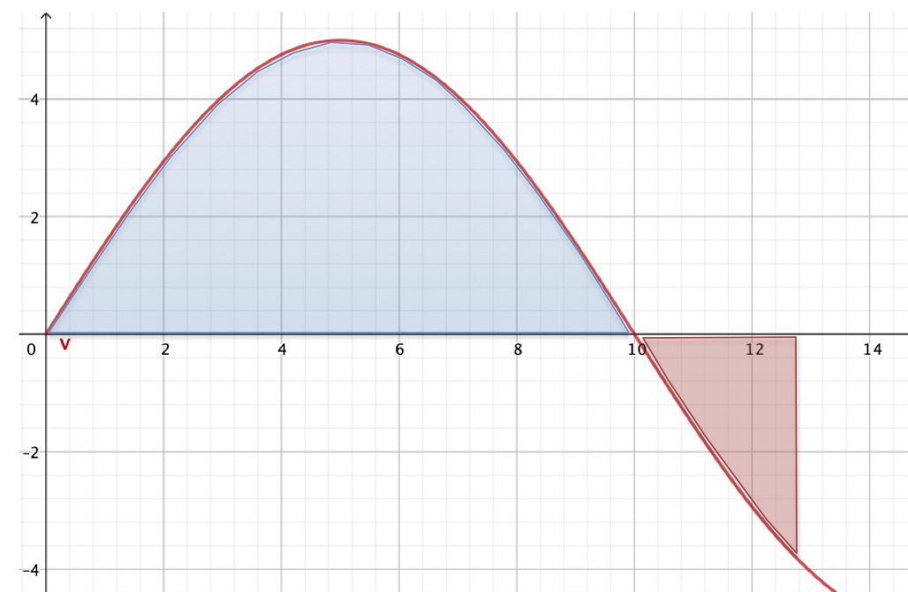
Tenemos ahora un área “positiva” en azul y un área “negativa” en rojo. Esto quiere decir que pasado \(t = 10\) el área total, y por lo tanto la posición, va disminuyendo al ir aumentando \(t\). Es decir, el objeto se va acercando al origen. Otra vez, esto coincide con nuestro conocimiento de lo que hace el coche: a partir de \(t = 10\) el coche retrocede.
¿Y qué pasa en \(t = 20\)? Por simetría vemos que el área por encima del eje X es igual al área por debajo, por lo tanto el área total es 0: el coche ha vuelto al origen.
El tener integrales negativas va a resultar muy útil para calcular este tipo de fenómenos.
8.9 Teorema fundamental del cálculo
En la interpretación geométrica de las derivada hemos visto que sirve para calcular la pendiente de la tangente a una curva. En la interpretacon geométrica de la integral, hemos visto que sirve para calcular el área bajo una curva. Son dos cálculos diferentes y no parece que tengan mucho que ver la una con la otra. Resulta sorprendente que estén, como sabemos, tan ligadas.
Pero si miramos las interpretaciones físicas, ya no es tan sorprendente: si tenemos la función de la posición de un objeto en cada instante de tiempo, hemos visto que la derivada nos da su velocidad. Pero si lo que tenemos es la velocidad del objeto en cada instante de tiempo, la integral de esa función nos da la posición. De forma natural hemos encontrado una relación estrecha entre derivada e integral.
El teorema fundamental del cálculo nos dice que la derivada de la integral de una función es esa misma función. Más formalmente, sea una función \(f(x)\) que tiene una integral entre \(a\) y \(b\). Sea un punto \(x ≤ b\). Sea \(F(x)\) el área bajo la curva entre \(a\) y \(x\) Sabemos que esto es \[ F(x) = \int_a^x f(x)dx.\] Entonces la derivada de \(F(x)\) es \(f(x)\): \[\frac{dF}{dx}(x) = f(x).\]
Hemos vislumbrado con las interpretaciones físicas que esto es así. Vamos a verlo ahora geométricamente.
Al definir la derivada en el apartado 8.4 dijimos que la derivada nos indica cuánto cambia una función al darle un empujoncito a la variable \(x\), de tamaño \(dx\). En concreto, la derivada es el cambio que calculamos cuando el empujoncito tiende a 0: \[\frac{df}{dx}(a) = f^{\prime}(a) = \lim_{dx \to 0}\frac{f(a+dx) - f(a)}{dx}\]
Tenemos una función cualquiera \(f(x)\). 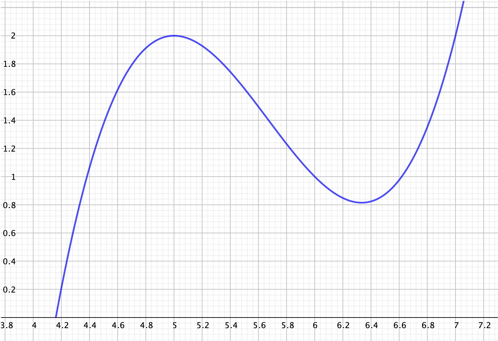
Sea \(F(x)\) la integral de \(f(x)\), es decir su área entre un punto determinado y un punto genérico \(x\). En el dibujo siguiente \(F(x)\) es el área de la zona verde:
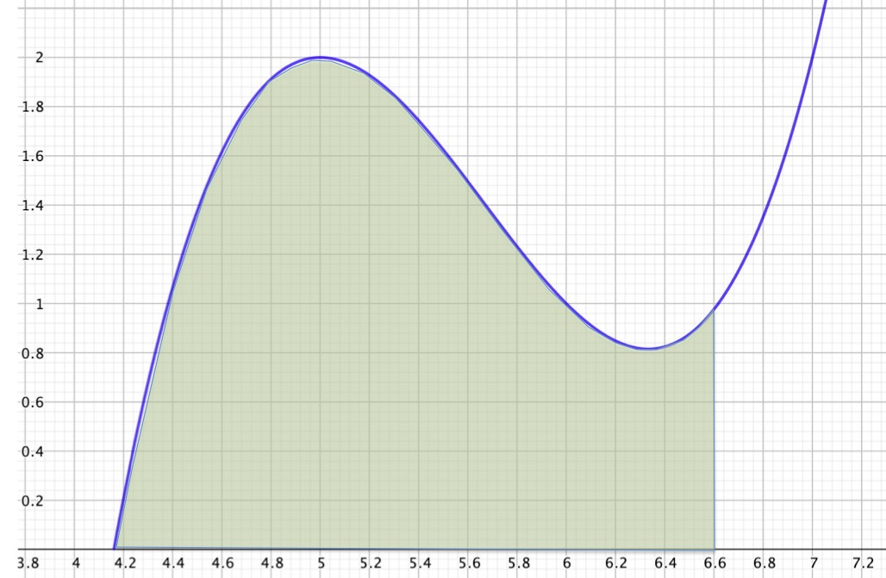
¿Qué pasa si le damos un empujoncito de tamaño \(dx\) a \(F(x)\)? Es decir, qué pasa con el área si pasamos de \(x\) a \(x + dx\)? Lo que hacemos es añadir un pequeño rectángulo al área que ya tenemos:
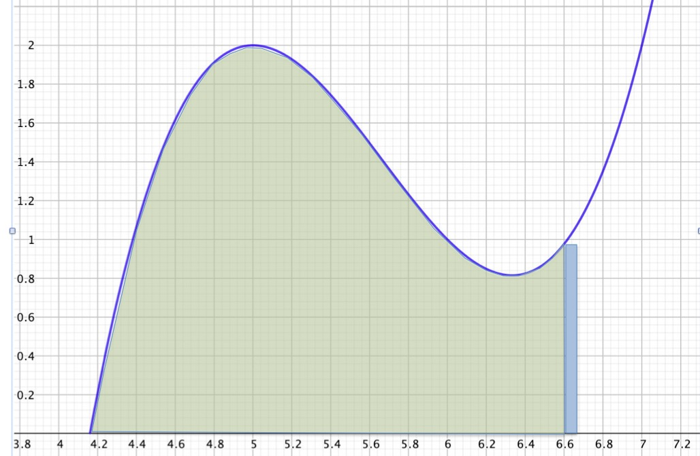
Este pequeño rectángulo azul tiene de base \(dx\) y de altura \(f(x)\), luego su área es \(f(x)\cdot dx\). El área tras el empujoncito es el área que teniamos más el área del rectángulo: \[F(x+dx) = F(x) + f(x)\cdot dx\]
Para obtener la derivada hemos de hacer el límite cuando \(dx\) tiende a 0: \[\begin{align} \frac{dF}{dx}(x) &= \lim_{dx \to 0}\frac{F(x+dx) - F(x)}{dx}\\ &= \lim_{dx \to 0}\frac{F(x) + f(x)\cdot dx - F(x)}{dx} = \lim_{dx \to 0}\frac{f(x)\cdot dx}{dx}\\ &= f(x) \end{align}\]
Como habíamos dicho, la derivada de la integral de \(f(x)\) es \(f(x)\).